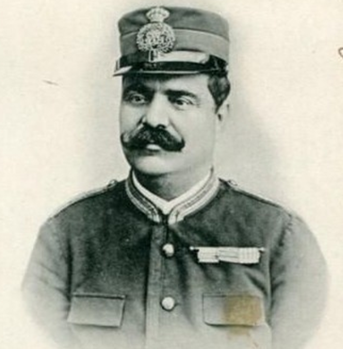
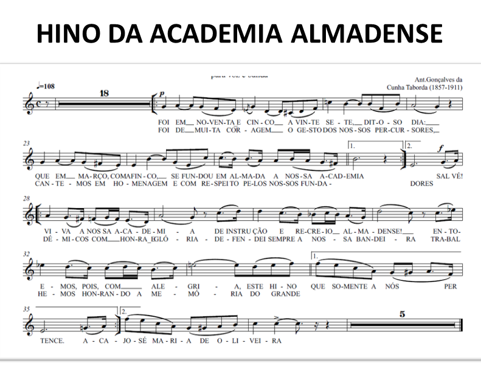

A música do Hino da Academia foi composto pelo Maestro António Taborda a pedido de Artur Paiva, e tocado pela primeira vez no 1º aniversário da Academia, ainda sem letra. Só bastante mais tarde, provavelmente a pedido do Maestro Leonel Duarte Ferreira, Jerónimo Louro escreveu a letra do Hino. A versão cantada foi pela primeira vez executada a 14 de novembro de 1926 pelo Orfeão Infantil organizado e ensaiado pelo Maestro Leonel Duarte Ferreira.

ANTÓNIO TABORDA
JERÓNIMO LOURO

O Hino da Academia Almadense no 117º aniversário, 27 de Março de 2012:
Foi em noventa e cinco
A vinte e sete, ditoso dia
Que em Março, com afinco
Se fundou em Almada a nossa Academia
Foi de muita coragem
O gesto dos nossos percursores,
Cantemos em homenagem
E respeito pelos nossos fundadores
Salve! Viva a nossa Academia
De Instrução e Recreio Almadense
Entoemos pois com alegria
Este hino que só a nos pertence
Académicos, com honra e glória
Defendei sempre a nossa Bandeira
Trabalhemos honrando a memória
De José Maria de Oliveira.
Jerónimo Louro
O Hino da Academia Almadense no
125
º aniversário, 27 de Março de 20
20


Academia de Instrução e Recreio Familiar Almadense 202